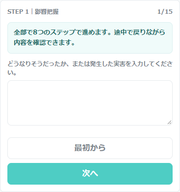
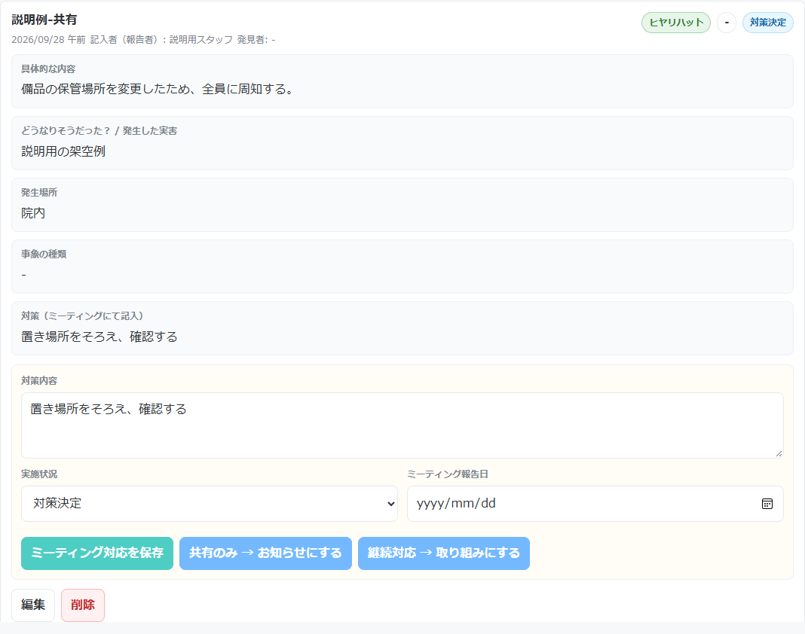
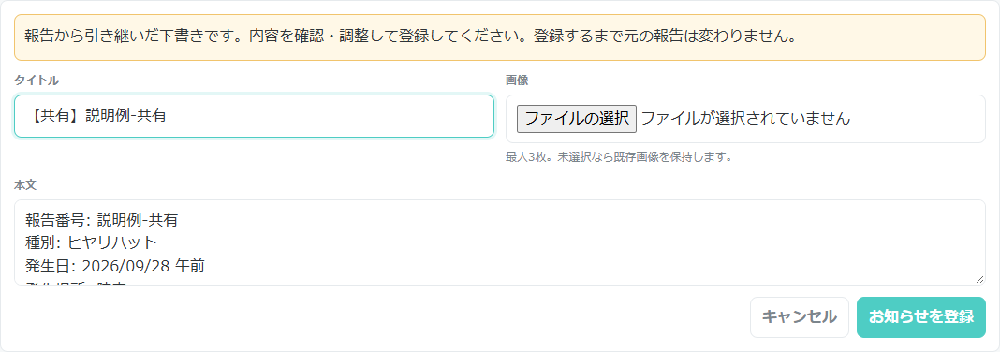
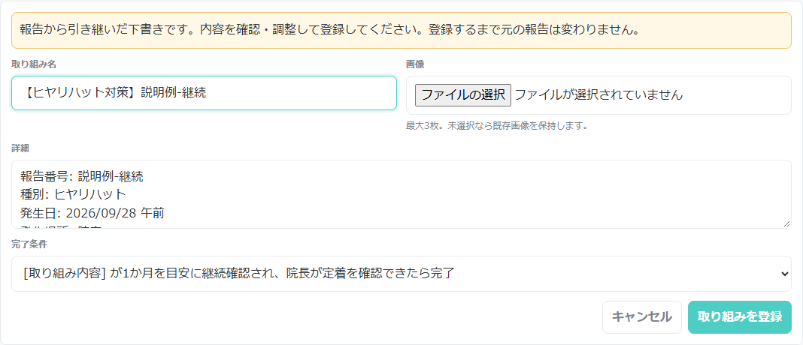
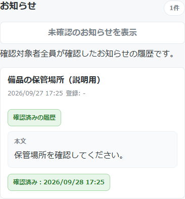
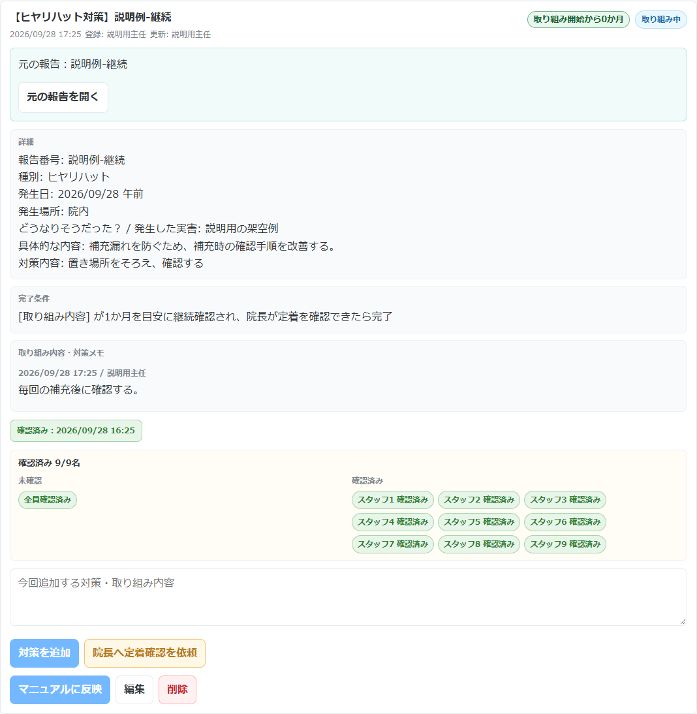
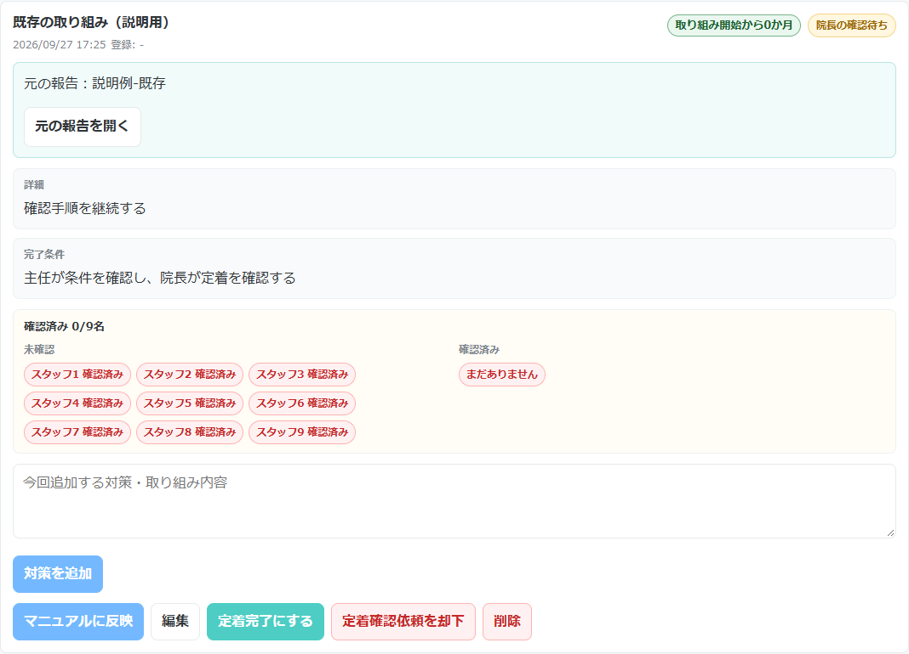
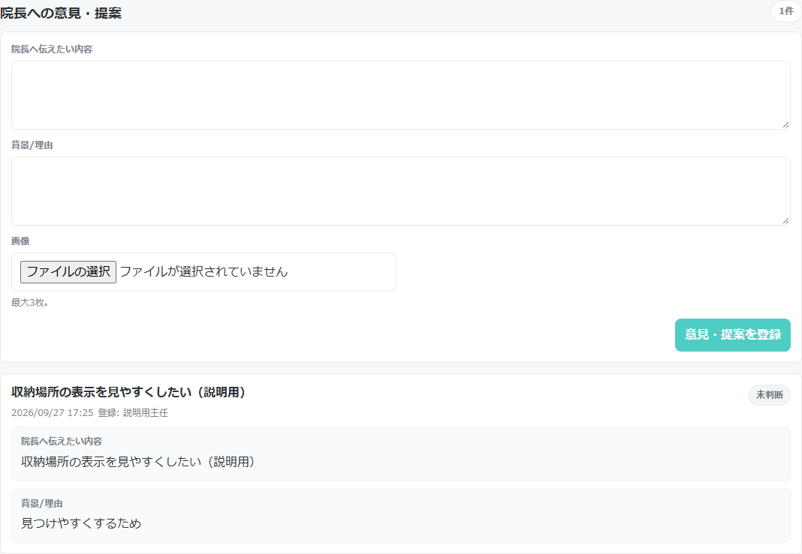

例：備品の保管場所の変更を周知する。
下書きを確認して登録 → スタッフが内容確認 → 全員確認後は履歴へ。
報告した内容を共有し、必要な対策を実践して、定着するまで確認します。
まず「共有のみ」か「継続して取り組む」かを分けます。役割に応じて表示されるボタンが異なります。
掲載画面は操作説明用の架空データです。画像を押すと別タブで拡大できます。
主任が報告を確認し、対応方法を選びます。
例：備品の保管場所の変更を周知する。
下書きを確認して登録 → スタッフが内容確認 → 全員確認後は履歴へ。
例：補充漏れを防ぐため、確認手順を改善する。
下書きを確認して登録 → 内容を理解 → 実践・振り返り → 院長が定着確認。
スタッフ：説明を受けて内容を理解し、日常業務で実践します。
主任：説明・確認状況・振り返りを取りまとめ、院長へ定着確認を依頼します。
院長：定着を確認し、完了または継続を判断します。
報告を登録しただけでは、お知らせや取り組みにはなりません。主任が内容を確認して振り分けます。

下書きが開いた段階では、まだ登録されていません。「キャンセル」で取り消せます。元の報告の画像は自動コピーされません。必要な画像は下書きで選んでください。



確認対象者全員が確認すると、通常一覧から外れて「確認済みの履歴」に残ります。「確認済みの履歴を表示」を押すと見返せます。
全員確認後に履歴へ移るのは、お知らせだけです。取り組みは全員確認後も続きます。

「確認しました」は、内容を理解したという確認です。取り組みの完了を意味するものではありません。

取り組みの進行状況は、元の報告にも表示されます。同じ進行状況を報告側へ入力し直す必要はありません。

この項目は、主任と院長に表示されます。
今回の「お知らせ／取り組みへの振り分け」は報告から行う機能です。意見・提案から自動で振り分ける機能はありません。

閲覧専用端末では内容の確認・移動ができますが、登録・更新や「確認しました」の操作はできません。